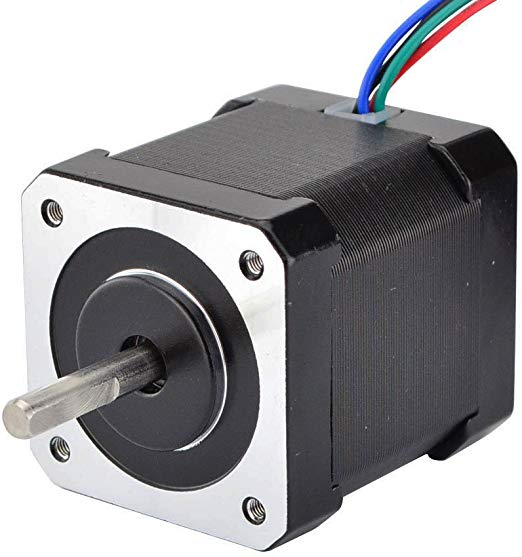

O projeto desenvolvido no contexto da unidade curricular Laboratório de Sistemas consiste numa máquina de desenho e escrita
2D; o processo de desenho é baseado num sistema de eixos duplo (X-Y) e um mecanismo que possibilita elevar e baixar o marcador de desenho.
A projeção da estrutura mecânica teve por base o estudo preliminar de estruturas adotadas particularmente tecnologia,
optando-se por utilizar o movimento de eixos "T-Bot", revelando-se uma excelente opção na garantia da estabilidade no processo de desenho.
Desta forma, optou-se pelo desenho de toda a estrutura utilizando o desenho assistido por computador, sendo que posteriormente procedeu-se
à respetiva impressão dos modelos 3D.
O sistema projetado terá por base uma interface gráfica desenvolvida em ambiente Qt, sendo que o desenho pretendido pelo utilizador
será processado, a um controlo de alto nível, por software Python, que possibilitará a comunicação com a placa controladora, que se designa por
controlo de baixo nível, que irá processar a informação recebida pelo ESP-01 via comunicação série e possibilitará o controlo dos motores de passo a passo e
do servo motor.
Desta forma, apresenta-se o estado de arte desenvolvido, o qual possibilitou o estudo das tecnologias frequentemente utilizadas
neste tipo de projetos, o que nos permitou elucidar na prossecução dos objetivos pretendidos no desenvolvimento da Plotter 2D.
A arquitetura do sistema desenvolvido encontra-se dividida em 3 parte: interface de utilizador,
controlo de alto nível e controlo de baixo nível, conforme indicado na figura 1.
Fig.1 - Arquitectura do Sistema
Interface de Utilizador
A interface de utilizador consiste numa aplicação desenvolvida em Qt, com o objetivo de simplificar a interação
utilizador/máquina, possibilitando o controlo da plotter 2D em ambiente de interface gráfica.
Deste modo, o controlo da plotter poderá ser realizado através da escolha de desenhos pré-definidos, envolvendo diversas formas
geométricas, como, por exemplo, círculo, quadrado, triângulo, estrela e diversos outros polígonos, sendo que nesta última opção existe uma grande diversidade
de formas geométricas, dado que é possível definir o número de lados do polígono pretendido. Além disso, é também possível realizar desenho livre, utilizando para isso
controlos manuais que envolvem um joystick e rato/teclado; além destas opções é possível carregar um ficheiro de texto ou csv, bem como a movimentação
dos eixos através da escolha manual das coordenadas pretendidas pelo utilizador.
Fig.2 - Qt
Controlo de Alto Nível
O controlo de alto nível consiste no desenvolvimento de software em linguagem Python, integrando a biblioteca Turtle Graphics.
Após o desenvolvimento do desenho pretendido, este nível de controlo é responsável pelo envio da informação para o ESP-01 via Wi-Fi, utilizando
métodos HTTP, sendo que, de seguida, a informação é reencaminhada para o microcontrolador ATMega328p via USART.
Controlo de Baixo Nível
O controlo de baixo nível consiste no desenvolvimento de software em linguagem C, sendo responsável pelo controlo dos motores de passo a passo,
servo motor e do LED, satisfazendo as funções solicitadas pelo controlo de alto nível.
O sistema desenvolvido aprensenta diferentes níveis de hardware, sendo composto por um sistema de controlo de alto e baixo nível.
Sistema de Alto Nível
O sistema denominado de controlo de alto nível é composto por um microcontrolador ESP-01, responsável pelo envio da informação,
tratada no software Python IDE, para o microcontrolador ATMega328p utilizando, para isso, o porto GPIO, estabelencendo
uma comunicação série entre ambos os dispositivos.
Fig.3 - ESP-01
Sistema de Baixo Nível
O sistema denominado de controlo de baixo nível é responsável pela receção da informação do canal de comunicação série entre
o micocontrolador ESP-01 e ATMega328p, procedendo ao seu respectivo processamento, possibilitando o controlo dos motores de passo a passo,
utilizando o respetivo controlador L298N e o controlo do servo motor.
Esquema
O esquema da PCB apresenta os diversos circuitos do projeto desenvolvido, sendo que as ligações entre a placa e os periféricos
são efetuadas por conectores.
O circuito apresenta uma fonte de alimentação de 10V; porém, dado que os diferentes componentes apresentam tensões
de alimentação diferentes, foram utilizados 2 tipos de reguladores de tensão : LM7805, para fornecer uma tensão 5V e LD33V, para fornecer
uma tensão de 3.3V. É ainda importante referir que na comunicação série, dado que o microcontrolador ESP-01 apresenta um nível de tensão lógica
de 3.3V e o microcontrolador ATMega328p apresenta um nível de tensão lógica de 5V, procedeu-se à utilização de um divisor de tensão entre o porto
TX do ATMega328p e o porto RX do ESP-01; no caso da ligação entre o porto RX do ATMega328p e o porto TX do ESP-01, não se revelou necessário
elevar a tensão, dado que 3.3V é um valor de tensão suficiente na definição de um nível lógico alto por parte do microcontrolador ATMega328p, que
utiliza níveis lógicos TTL, apresentando um nível lógico alto com um valor mínimo de 2.7V.
A utilização dos díodos no controlador L298N apresentam um cariz de proteção para este circuito integrado, uma vez que
os motores definem-se a nível eléctrico como cargas indutivas que geram picos de tensão com uma polaridade inversa(força eletromotriz induzida),
sempre que ocorre uma variação do fluxo magnético nas bobinas.
O motores de passo a passo utilizados na movimentação do eixo X e Y da plotter são os NEMA17, com referência
17HS19-2004S1; este motor é do tipo Bipolar e aprensenta uma tensão nominal de funcionamento de 2.80V e uma corrente máxima
de 2.00A, por bobina. Os motores efetuam 200 passos/volta, sendo que no controlo de um passo completo(FULLSTEP), realizam movimentos lineares de 0.14mm
e rotativos de 1.8º, sendo esta a sua resolução mínima.

Fig.4 - Motor de Passo a Passo
Servo Motor
O servo motor SG90 é utilizado na movimentação do eixo Z, permitindo elevar e baixar a caneta de desenho.
O desenvolvimento do código python necessário para o desenho de um círculo tem por base um conjunto de
equações matemáticas que definem a rotação de eixos em duas dimensões num referencial cartesiano X-Y.
As equações que definem a transformação em duas dimensões, permitindo a rotação dos eixos X-Y no sentido anti-horário
através de um ângulo θ, resultando num eixo X'-Y', são as seguintes:
No sistema de eixos X-Y, define-se o ponto P com coordenadas polares (r, α). Deste modo, num sistema de eixos X'-Y'
, P irá ter como coordenadas polares (r, α-θ). Desta forma:
A realização deste projeto permitiu aprofundar os conhecimentos anteriormente adquiridos no ramo da Engenharia Electrotécnica e
de Computadores, bem como explorar novas ferramentas de desenvolvimento de software como, por exemplo, programação em ambiente Qt ou Python.
O desenvolvimento da plotter 2D apresentou diversas adversidades mecânicas, sendo que o processo de montagem
envolveu a alteração e ajuste dos mecanismos de movimento dos eixos, que se revelam um aspeto crucial no nível de qualidade do desenho.
A nível de software, inicialmente, optou-se por utilizar uma tecnologia baseada em GCODE, como é possível de ser observado
no estado da arte. Contudo, optou-se por abordar uma tecnologia baseada em Python, que não se revela tão vulgar em projetos que envolvam
plotters 2D, permitindo explorar diversas opções que esta linguagem de programação oferece aliada ao ambiente gráfico em ambiente Qt.
Após definidos os objetivos pretendidos, procedeu-se ao desenvolvimento de todo o software, que possibilitou cumprir
os objetivos pretendidos com este projeto, salientando-se como principais o desenho de um círculo e o desenho livre com joystick ou
teclado/rato; a nível de envio de informação salienta-se a comunicação sem fios, que se revela um aspeto prático no controlo da plotter.
Por fim, é importante salientar que os desenhos obtidos ao longo do teste da plotter revelaram-se com um nível de precisão
tendo em conta o objetivos pretendidos, dado que, o resultado obtido está completamente cofinada à capacidade da placa controladora no controlo do motores de
passo a passo, bem como a estabilidade mecânica do suporte do marcador de desenho.
[3]Anton, Howard —
Elementary Linear Algebra(5th ed.), New York:.
O’Wiley, 1987. ISBN 0-471-84819-0.
[4]Beauregard, Raymond A.; Fraleigh, John B. —
A First Course In Linear Algebra: with Optional Introduction to Groups, Rings, and FieldsBoston:
Houghton Mifflin Co., 1973. ISBN 0-395-14017-X.
[5]Burden, Richard L.; Faires, J. Douglas —
Numerical Analysis(5th ed.), Boston:
Prindle, Weber and Schmidt, 1993. ISBN 0-534-93219-3.
[6]Protter, Murray H.; Morrey, Jr., Charles B. —
College Calculus with Analytic Geometry(2nd ed.), Reading:
Addison-Wesley, 1970. LCCN 76087042.